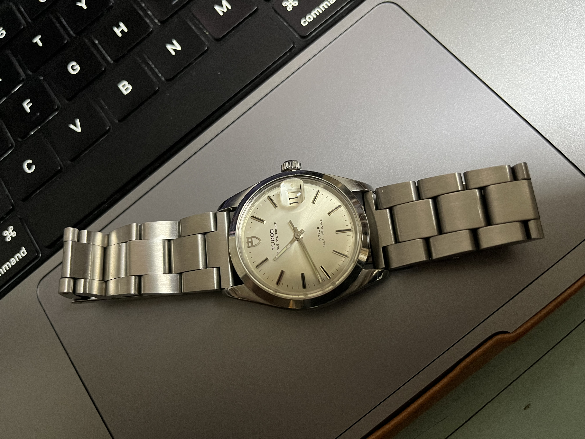

Tudor Prince Oysterdate 34 mm
故事的一切大概要從去年 (2024) 的過年説起。
去年，外公將他的 Tudor Prince Oysterdate (34mm) 傳承給我。這支手錶約莫是民國 65 年時，外公到香港幫表哥做生意時獲得的謝禮。從那時起，外公就一直將這只手錶戴在他的手上，這一戴就是 40 多年。感受得出外公非常喜歡這只手錶，畢竟陪伴了他 40 多個年頭，一定對它非常有感情。這支土豆的機心是 ETA 2784 (自動上鏈)，原裝勞力士錶殼，搭配銀白色的放射紋面盤，以及有點氧化的錶針。那個年代的 Tudor 使用居然還是勞力士的錶殼，它的背蓋上刻著 original oyster case by rolex geneva 字樣，連錶冠是也是勞力士的 logo。
|  |
當時舅舅也在一旁見證了這項老古董的傳承，於是他回房間裡拿出了另一支古董與我們交流。這回是一支 18K 金的 Rolex Precision (Ref: 9659)，其面盤的設計非常簡單，12 點鐘只有 ROLEX 字樣，而 6 點鐘寫著 precision，和後來 DJ/DD 的外觀有明顯不同。這支老勞是我的舅公生前配戴的手錶，在他過世後，我的舅舅便一直將它保存起來緬懷。
其實我一直以為，我這一輩子大概都不會和 Datejust 或 Day-Date 這樣的手錶扯上關係，但從我獲得外公的 Tudor 開始，我的審美觀就漸漸發生了變化。DJ/DD 這類的錶很神奇，一開始看覺得很老氣，但隨著越看越久，審美觀真的會漸漸改變，也許這就是它們之所以被稱為 timeless timepieces 的原因吧。後來我為它換了全新的鱷魚皮錶帶，讓我更喜歡使用這只手錶了，它彷彿被賦予了新的生命。只可惜 34 mm 的錶徑對我來說還是太小，所以常常戴一戴會視覺疲乏，然後就會換回我的舊愛 – 萬寶龍 7016 (36mm)。
Rolex Datejust 36 mm (w/ Golden MoP Dial)
去年 (2024) 年底，偶然在王永昌鐘錶的網站上看見了這只 Datejust 36mm (Ref: 16238)，18K 金的錶殼、Fluted Bezel、原廠貝母羅馬面、良好的錶況，讓我一眼上心。唯一可惜的地方是只有單錶（無盒無單），因此這段時間即使我很想下手，但總是望之卻步，畢竟如果花了這筆錢，最後卻發現手錶有問題的話，著實是個困擾。基於這些考量，我漸漸就忘記它了。
事隔半年，我再次打開了王永昌的網站，赫然發現這只手錶還沒有被買走，於是某天晚上便心血來潮登門賞錶。本來不打算買的，沒想到一到現場看到這只手錶，便深深的為之著迷：它的貝母面真的好漂亮，在沒有直接被光照射時，面盤呈現奶油的黃色，某些時候又有點粉紅、有點純白；在燈光直接照射時，就會呈現貝母面七彩斑斕的視覺效果。18K 金的錶殼看得出曾經拋光整理過，但次數應該不多，錶殼的邊邊角角不至於太過於圓潤，所以還能接受。最後還順便試了一下手動上鏈，轉動錶冠時機芯所發出的聲音真的很令人難忘，光是從聲音就可以感受到裡面所有的齒輪是同時在轉動的，宛轉悠揚，綿延不絕。
沒想到，居然是機芯的聲音成了壓垮錢包的最後一根稻草。
隔天中午，實在是忍不住了，到銀行提領現金並趕到王永昌將這只手錶帶回家。
其實我很好奇，這只錶的前主人是誰呢？為什麼這麼漂亮的手錶，會願意忍痛割愛呢？或許這也是玩老勞最浪漫的地方，手錶背後的故事總是引人遐想，令人不禁想思考這只手錶的前主人都是如何對待它的。只可惜，店家需要保護賣家隱私，因此也不便多透露。
Rolex Service Center
由於沒有盒單的關係，心裡總覺得有點擔心，畢竟也花了一筆不小的錢，於是最後還是決定送去 RSC 驗錶。截至 2025 年 5 月，RSC 仍然是可以免費驗錶的，即使沒有盒單也可以。如果沒有盒單，驗錶分成兩種：
- 免費驗錶：只驗零件是否為原廠原裝（需要約一週的時間），但完成後不能拿到任何證明
- 付費驗錶：只要殼號與機芯序號正確即可洗油（需要一個月），非原廠零件需自費換成原廠的，完成後會拿到官方證明與保卡
為了讓自己安心，我選擇 2。
取錶
4/25 送錶到 RSC 後，5/13 勞服就打來通知手錶已經保養完成，可以去拿了。到現場取了號碼牌後，大約只等待半小時就輪到我。看到魂牽夢縈的手錶後，簡單測試了一下手錶的瞬跳功能沒有問題、外觀上沒有什麼明顯的新刮痕，於是就刷卡付錢。最終產生的費用是 23350（光是洗油保養就要將近 24000，不拋光的話便宜 4000，換藍寶石鏡面 6333）。特別值得一提的是，我的 18K 金錶冠也一併被換成新的了，但居然沒有收費！詢問後得知舊錶冠換新錶冠享有一次免費的機會，所以本次更換 18K 金錶冠不收費！
最後獲得了一張 RSC 官方維修單、一張 NFC 保固卡，回家使用後發現走時變準了，從原本的誤差 +5 秒/天變成 +0.2 秒/天。以一支 37 年的老機械錶來說（這只手錶是 1988 年出廠），真的令人不得不佩服勞力士的工藝。
感謝
最後的最後，感謝前錶主的割愛，雖然我不認識你，但我打從心底非常感謝。此外，感謝幫我保養手錶的 RSC 師傅、以及相關的工作人員，還有謝謝熱情的大西門鐘錶，玩錶的路上很開心有你們。